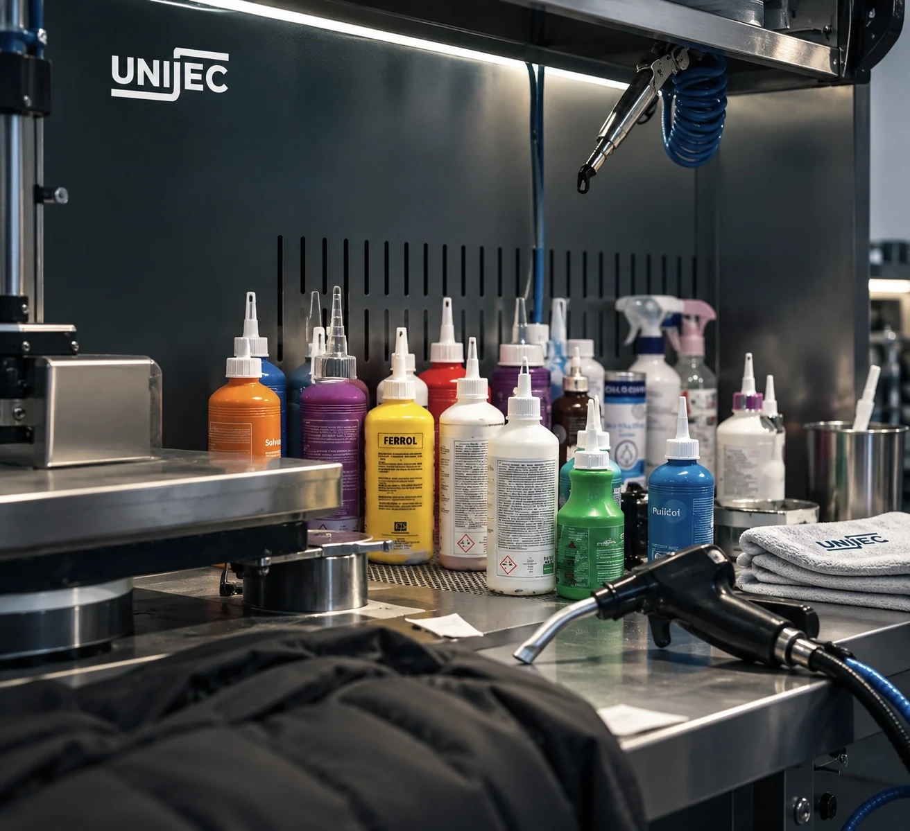
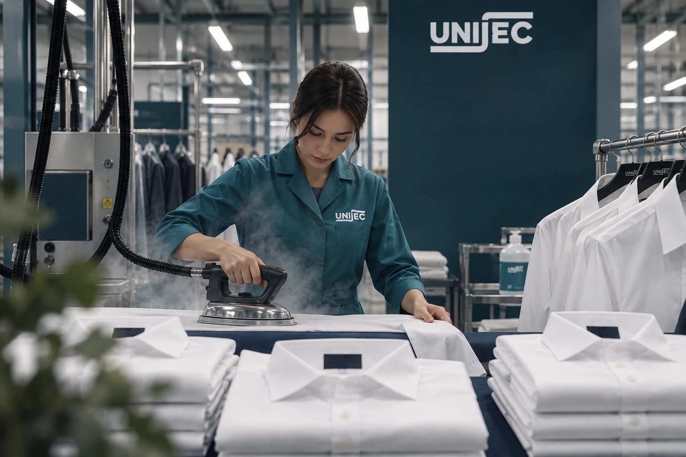
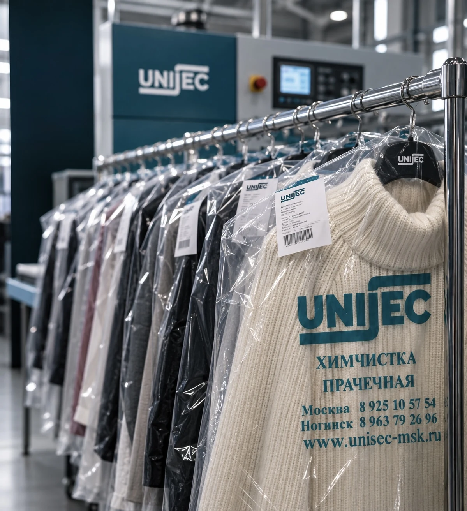
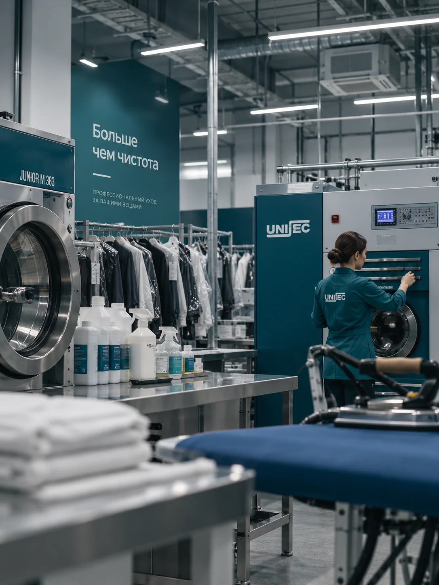

← На главную
/ ПОЧЕМУ UNISEC
Собственная фабрика.
За каждым чистым изделием стоит целый технологический процесс. На собственной фабрике UNISEC мы подбираем способ обработки, работаем с профессиональным оборудованием, выполняем чистку, глажку и финальную подготовку каждой вещи.
Для разных типов тканей и изделий применяются свои режимы обработки, что позволяет работать бережно и точно.

/ ПРОФЕССИОНАЛЬНЫЙ УХОД
Внимание к вещи на каждом этапе.
От приёмки и маркировки до подготовки и возврата: технология подбирается с учётом особенностей изделия.






Доверьте вещи профессиональному уходу.
Ждём вас в ТРЦ «Бутово Молл» на Чечёрском проезде, 51.